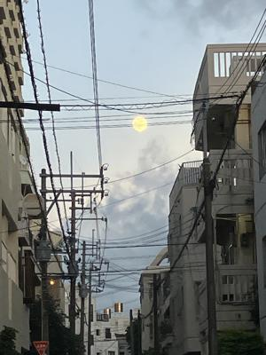
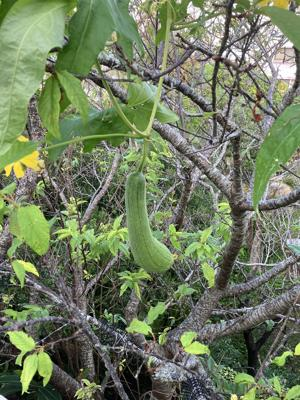
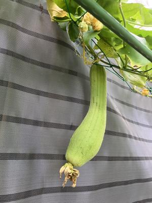

うるがいの話 ある日
最新: 大腸検査【うるがいの話 ある日】とは 一日だけのプログです
『うるがいの話』の最新一日だけのプログで、通信料が少なく経済的だ。カニの画像をクリックすると全ての日付が載る『うるがいの話』サイトを表示します
|
|
【うるがいの話】 うるがい(ｳﾙｶﾞｲ urugai)とは、『もずくがに』の名前でとても大きくなります。 |
|---|---|
|
|
【カミマヤーの話】 猫のことを方言でマヤーといいます。カミマヤー（kamimayaa）とは、神の猫のことです。 |
|
【たながぁの音楽】 たながぁ（ﾀﾅｶﾞｰ tanagaa）とは手長えびのことで、何種類かあり大きいのは車 エビぐらいになります。 |

|
【ぶながぁの話】 ぶながぁ(ﾌﾞﾅｶﾞｰ bunagaa)とは、赤い髪の毛、赤い身体、そして身長は１ｍ２０ｃｍ ぐらい、川の蟹を食べているの目撃された。場所は沖縄県国頭郡大宜味村のと ある村僕の隣近所に住んでいる爺さんから、聞いた話です。 |
|
|
【ギーマの話】 ギーマ(giima)とは、山原の里山に咲くスズランに似た、 花を付けます。実は食べられます、 気が付くと口の周りが紫になっています。 |
2024年10月17日 (木）大腸検査
15:41
きのうヨメが朝から、大腸検査の薬を飲んでいる。数か月前、県立病院
の待合室で９０歳を超えるとバァーサンに家族が、大腸検査しないと原
因が分からないって先生が言っている、『でもね大腸検査はキツイから
ね』と延々と話していたのを思いだす。私も面識のあるヨメのお義母さ
んの妹の旦那さんが、大腸がんで４７才で亡くなった。だから、私もこ
れまでに数回、嫁は２年前にも受けたばかり。検査がキツイのですよ、
ヨメは痛み止めをせずに診察を開始したものの、痛いので直ぐに痛み止
めを処方した（スゴイ効きらしい）。ポリプ１個、除去したと、ポリプ
はきっと介護からくるストレスが原因だろうと話す。病院から帰るとき
満月が登り初めていた。

で、日課のジョギングができなったせいか、夜中目が覚めて寝付けない
。『ウイルス学者の責任 ＰＨＰ新書 宮沢 孝幸著』の本を一冊完読
する（３時過ぎていた）。本を読むと『今市事件』は典型的な冤罪では
思うが。
ヘチマを二つ収穫、左はお隣さんへ右は、お昼のオカズになった
 
１５時３１分 ビットコインの総資産 ￥２９、２５５（↑２９８）